Suporte ao Usuário
Para cadastrar uma demanda clique no botão disponível na tela Pesquisar Demandas de Suporte:
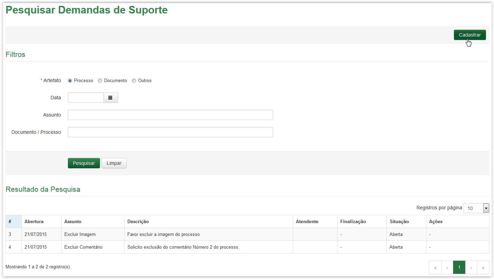
Clicando no botão Cadastrar da tela Pesquisar Demandas de Suporte
A tela Cadastrar Demandas é apresentada (Veja Nota 1):
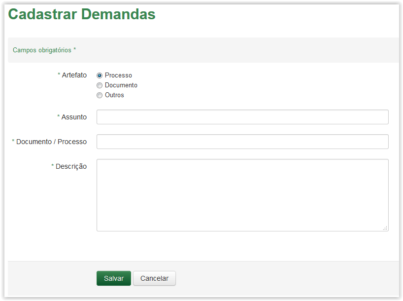
Tela Cadastrar Demandas
Informações para Gerar Demandas de Suporte:
Artefato:
|
À qual artefato será gerada a Demanda: Processo, Documento ou Outros
|
Assunto:
|
Assunto relacionado ao artefato da Demanda
|
Documento / Processo:
|
Número da digital ou do processo.
|
Descrição:
|
Texto referente a necessidade da Demanda.
|
 Preenchendo a tela Cadastrar Demandas!!
Preenchendo a tela Cadastrar Demandas!!
- O campo Artefato possui três opções: Processo, Documento e Outros. Ao selecionar a opção Processo ou Documento, o sistema apresenta o campo Documento / Processo. No entanto, ao selecionar a opção Outros o campo Documento / Processo desaparece. Selecione a opção desejada:
Tela Cadastrar Demandas após selecionar a opção Processo
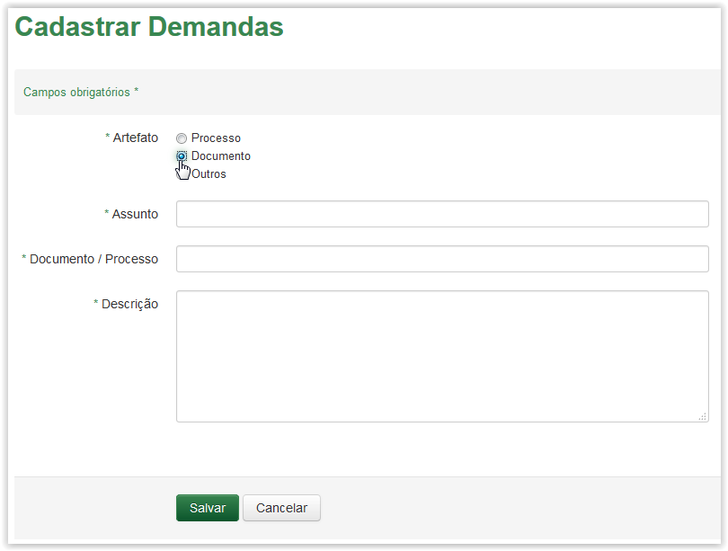
Tela Cadastrar Demandas após selecionar a opção Documento
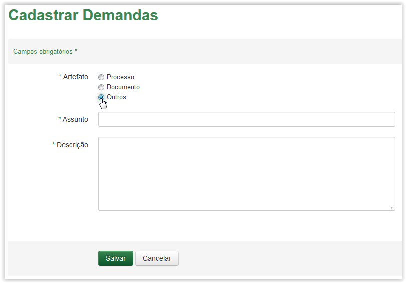
Tela Cadastrar Demandas após selecionar a opção Outros
- O campo Assunto é autocomplete, ou seja, à medida que o texto vai sendo digitado dentro do campo, uma lista correspondente à digitação é apresentada logo abaixo. Essa ação ocorre a partir do terceiro caracter informado e tem por objetivo facilitar a busca da informação. Após visualizar o item desejado na lista, clique em cima dele para que o assunto seja apresentado no campo Assunto:
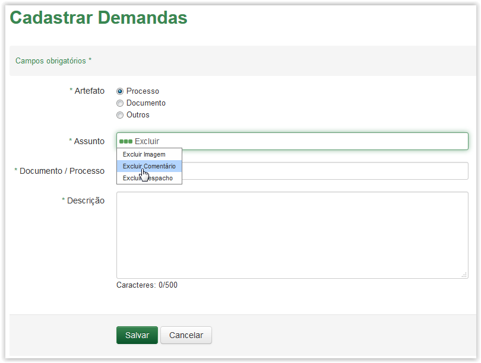
Selecionando um assunto no campo Assunto
- A tabela abaixo exibe os assuntos disponíveis e que podem ser utilizados para o artefato selecionado:
Assuntos para Processo
|
Assuntos para Documentos
|
Assuntos para Outros
|
Desapensar
|
Desapensar
|
Restaurar Etiqueta
|
Remover Peça
|
Anexar
|
Liberação de Lote de Etiqueta
|
Anexar
|
Apensar
|
Treinamento
|
Apensar
|
Excluir Imagem
|
Alteração de Perfil
|
Desmembramento de peças
|
Excluir Comentário
|
Excluir acesso
|
Excluir Imagem
|
Excluir Despacho
|
Inclusão de Usuário
|
Excluir Comentário
|
Anexação Incorreta de documento
|
Sugestão e/ ou Reclamação.
|
Excluir Despacho
|
Alterar Comentário
|
|
Anexação Incorreta de processo
|
Alterar Despacho
|
Alterar Comentário
|
Alterar Grau de Acesso
|
Alterar Despacho
|
|
Alterar Grau de Acesso
|
Lista de assuntos disponíveis para cada artefato
- O campo Documento / Processo é autocomplete, ou seja, à medida que o texto vai sendo digitado dentro do campo, uma lista correspondente à digitação é apresentada logo abaixo. Essa ação ocorre a partir do terceiro caracter informado e tem por objetivo facilitar a busca da informação. Após visualizar o item desejado na lista, clique em cima dele para que o número do artefato seja apresentado no campo Documento / Processo:
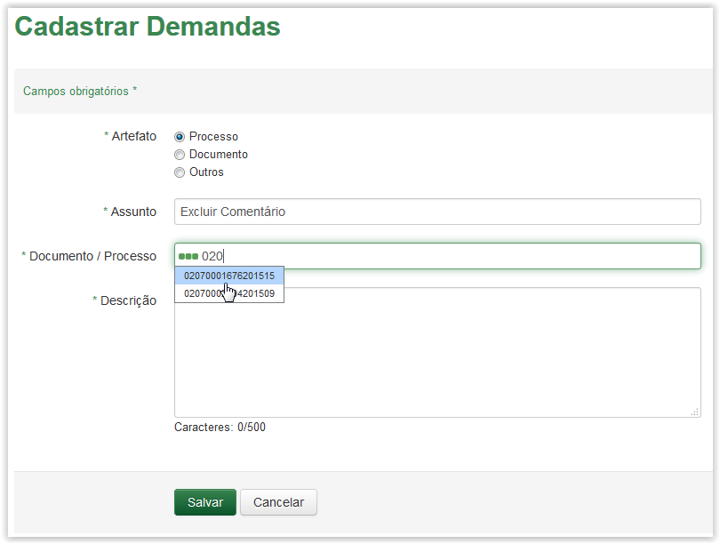
Selecionando o número do artefato na lista do campo Documento/ Processo
- Preencha o campo Descrição:
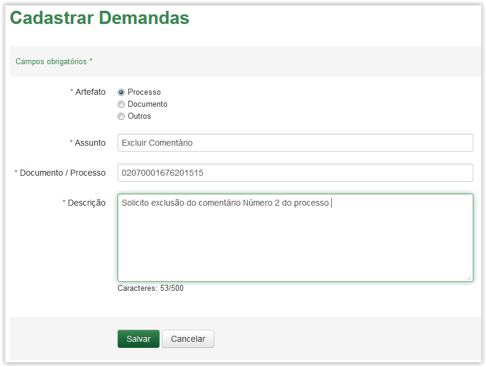
Preenchendo o campo Descrição
- Ao clicar no botão 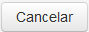 o sistema retorna para a tela Pesquisar Demandas de Suporte. No entanto, ao clicar no botão o sistema apresenta uma mensagem de sucesso e a demanda listadas na grid Resultado da Pesquisa:
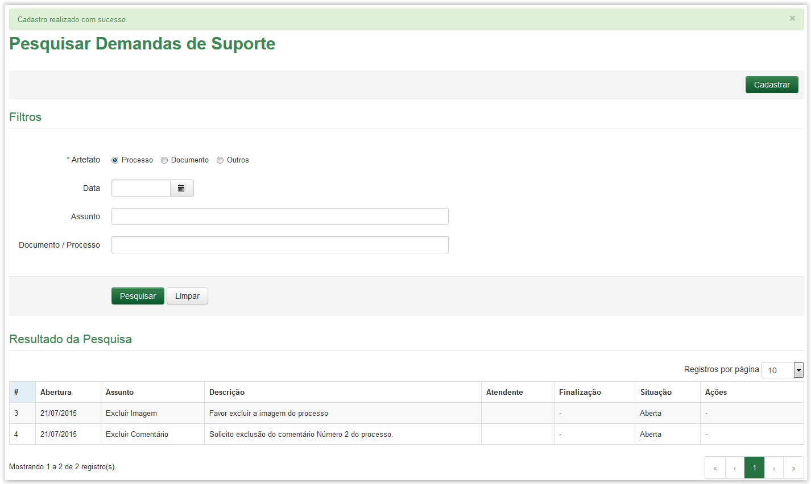
Tela Pesquisar Demandas de Suporte - Mensagem de sucesso
- Após cadastrar a Demanda de Suporte o sistema enviará um e-mail para o usuário solicitante, informando o status da demanda, e ao mesmo tempo a demanda ficará disponível em uma área exclusiva do administrador (SGI). Quando o perfil SGI encaminhar a solicitação de suporte para sua caixa pessoal de suporte, o sistema irá alterar o status da solicitação para Em análise. Nesse momento será enviado o seguinte e-mail ao solicitante:
- Status do suporte: “Com atendente”
- Nº do suporte: 9999/ano
- Data do pedido: 99/99/9999 – 99:99 (data e hora do pedido)
- Situação do pedido: Em análise
- Técnico Responsável: “nome da pessoa que foi encaminhada a solicitação”
- Nº da digital/processo: “Pode ser o número da digital ou número do processo”.(Será um link para abrir o documento ou processo da solicitação)
- Assunto: “Exibe o assunto que foi selecionado na solicitação de suporte”
- Descrição: “Exibe a descrição do assunto.”
Enquanto a Demanda não tiver sido finalizada, o artefato que gerou esta necessidade terá suas ações bloqueadas, sendo possível somente visulizar esse artefato na Área de Trabalho.
- No canto superior direito será apresentado o ícone 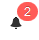que representa o alerta e exibe a quantidade de demandas que existem, seja de suporte ou de informação.
 Nota 1:
Nota 1:
Os campos obrigatórios são indicados pelo sinal de asterisco (*) na cor verde ao lado do nome. Quando algum ou nenhum campo obrigatório for preenchido, o sistema apresenta uma mensagem de erro: "Campos de preenchimento obrigatório não foram preenchidos.".
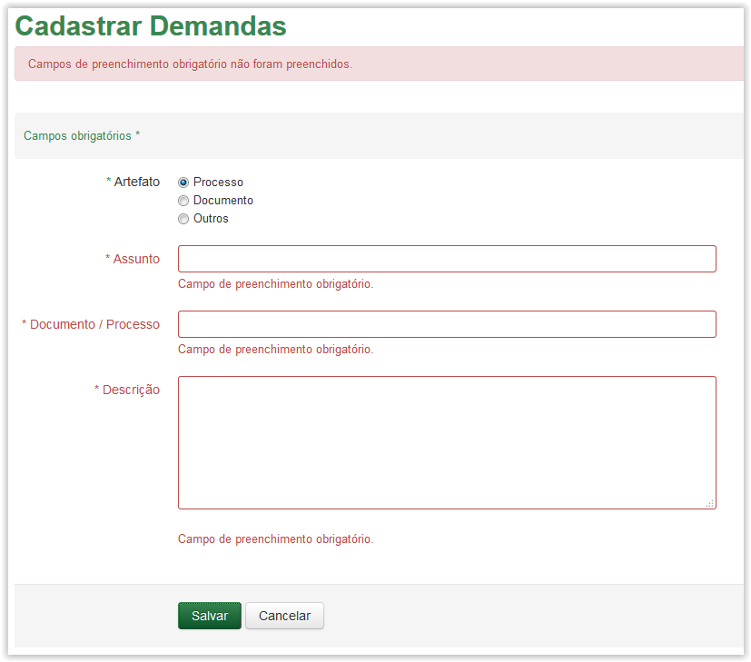
Comportamento da tela Cadastrar Demandas ao tentar salvar sem preencher os campos obrigatórios.
Created with the Personal Edition of HelpNDoc: Easy to use tool to create HTML Help files and Help web sites